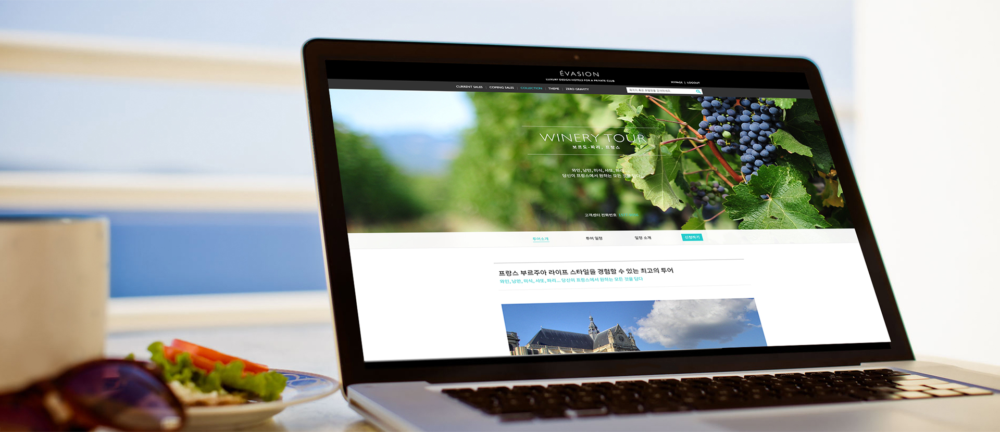

에바종은 Escape ‘탈출’을 의미하는 프랑스어로 일상의 무미건조함, 모두가 이야기하는 똑같은 여행지, 천편일률적인 패키지 여행에서
벗어나 나만의 특별한 여행지와 테마가 있는 새로운 여행의 패러다임을 제시하는 프라이빗 트래블 클럽입니다. 2011년 런칭 이후,
에바종에서 엄선한 91개국 400개 넘는 호텔 및 고객에게 맞춤화된 럭셔리 여행 경험을 제공하는 투어 프로그램을 보유하고 있는 서비스입니다.

우리는 이미 감당할 수 없을 정도로 많은 컨탠츠를 보유하고 접하면서 살아가기에 선택의 어려움을 겪는다. 이로인해 서비스는 확실한 포지셔닝과 그에 맞는 큐레이션이 필요하다. 다른 유형의 고객들에게 컨탠츠를 어떻게 전달하느냐에 따라 새롭고 매력적으로 끌어낼 수 있는 큐레이션 능력은 더욱 중요해지고 있다고 본다. 에바종 또한 다른 여행서비스와 유사한 컨탠츠를 가지고 시작하고 있었기 때문에, 서비스에 대한 리서치와 스터디를 많이 하고 작업을 진행하였다. 서비스 목표와 고객 분석을 통한 스터디를 통해 에바종은 타 서비스와 차별화된 포지셔닝과 높은 퀄리티의 컨탠츠를 보유하고 있었고, 이로인해 디자인 또한 즐겁게 임할 수 있었다.
개인화된 맞춤 서비스를 제공하기 위해 에바종 사용자에 대한 조사를 진행하였다. 이를 통해 Rich traveler / Aspiring traveler / Urban traveler / Active planner 4가지 페르소나로 나눴고 이에 맡는 컨탠츠 구성 작업을 진행하였다.
기존 랜딩화면보다 여행지 사진을 더 과감히 사용하여 여행에 대한 기대감을 가질 수 있도록 하였다. 추천 호텔 리스트 및 서비스 후기를 통해 서비스에 대한 신뢰를 만들고자 했다. 이를 통해 회원가입률이 기존대비 20% 향상되는 성과를 가져왔다.
 모바일 트래픽이 점차 올라가기에 디자인 개선을 통한 서비스 신뢰도를 높이고자 하였다. 모바일 트래픽이 취침전 시간에 올라가고, 모바일 특성상 예약 및 구매까지 이뤄지는 빈도가 낮은 것으로 확인되었다. 그래서 컨탠츠 소비하는 방식으로 여행에 대한 동경을 이끌어내서 회원가입을 유도하는 쪽으로 개선하였다.
개편 일주일 후, 모바일 웹 사이트 구매 15%증가 및 구매율이 PC웹 사이트를 앞지르게 되었다.
모바일 트래픽이 점차 올라가기에 디자인 개선을 통한 서비스 신뢰도를 높이고자 하였다. 모바일 트래픽이 취침전 시간에 올라가고, 모바일 특성상 예약 및 구매까지 이뤄지는 빈도가 낮은 것으로 확인되었다. 그래서 컨탠츠 소비하는 방식으로 여행에 대한 동경을 이끌어내서 회원가입을 유도하는 쪽으로 개선하였다.
개편 일주일 후, 모바일 웹 사이트 구매 15%증가 및 구매율이 PC웹 사이트를 앞지르게 되었다.

Rich traveler / Aspiring traveler를 위한 여행 아이템으로 제작되었다. 잡지 형태로 상품에 대한 정보 및 흥미를 끌고자 하였고, 무엇보다 여행 일정 및 프로그램을 사용자의 기호에 맞게 수정할 수있는 옵션 화면을 구성하는데 시간을 많이 할애하였다. 와이너리 투어를 시작으로 예약 문의가 늘어나면서 다른 상품이 추가되었다.
단순히 온라인에서 예약 및 관련 정보를 얻는 것으로 경험이 끝나는 것이 아니라 실제 여행을 다녀올때 까지 에바종을 경험할 수 있도록 여행 일정 및 설명을 담은 가이드북을 제공하였다. 고객에게 맞춤화된 가이드북이기 때문에 디자인 템플릿화 하였고, 제작 단가를 고려하여 디지털 인쇄방식을 사용하였다. 에바종 메인 색상을 비슷하게 뽑아내기 위해 많은 테스트를 진행하였다.
서비스가 6년이 넘어가면서 서비스 방향을 보완 및 강화하기 위해 브랜딩 리뉴얼을 진행하였다. 기존에 럭셔리 호텔 예약 서비스 이미지에서 고객에게 맞춤화된 여행 서비스로 브랜드를 강화하기 위해 무게감을 덜어내고 일상에서의 일탈을 담아내기 위해 노력하였다.

예약기능 강화 및 메뉴 구성을 변경하여 각 컨탠츠에 대한 사용성을 강화였다. 전체 톤을 밝게 작업하여 컨탠츠에 대한 집중도를 올리고자
하였으며, 에바종 메인 색상을 통해 편안하면서도 고급스러움을 유지하려고 하였다.